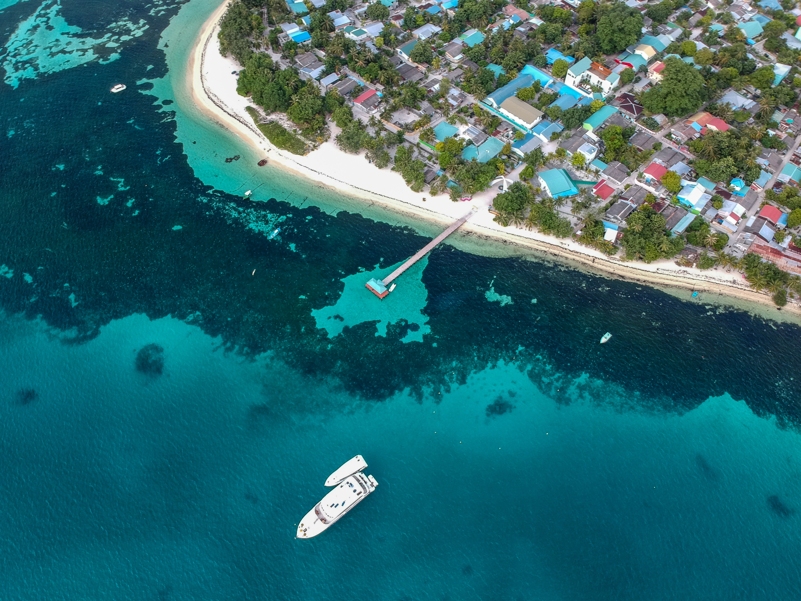
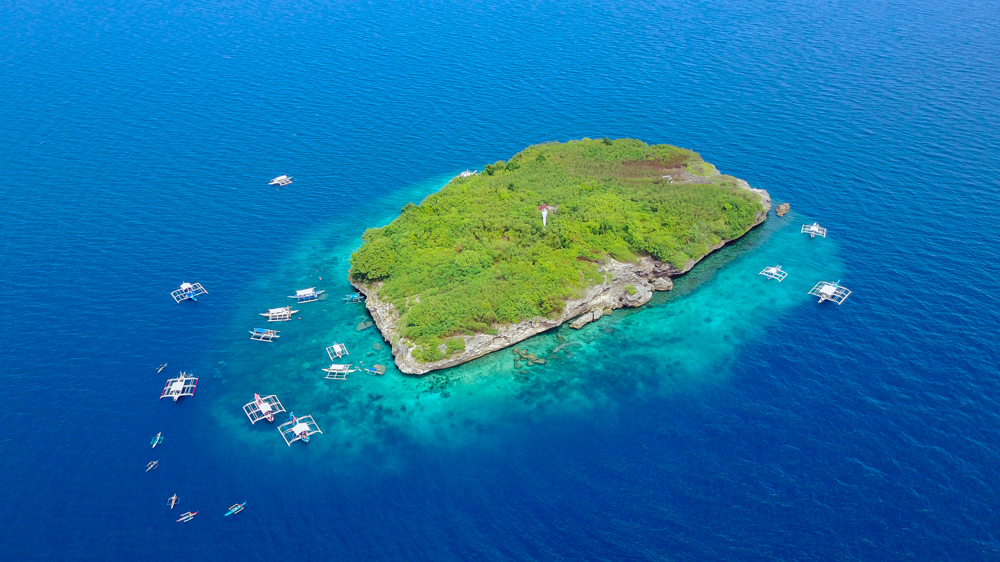
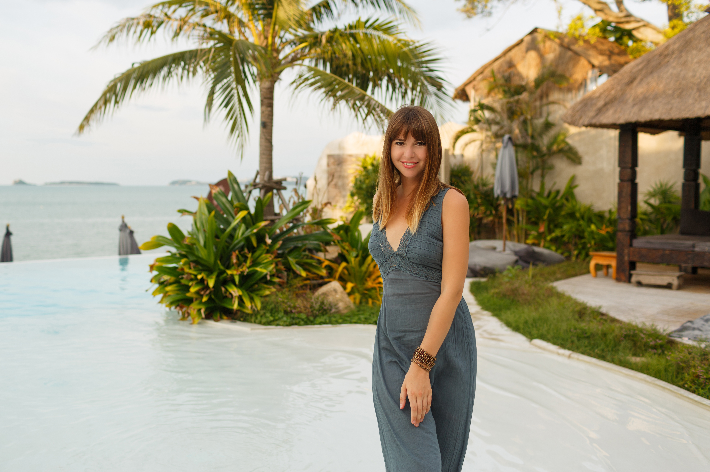
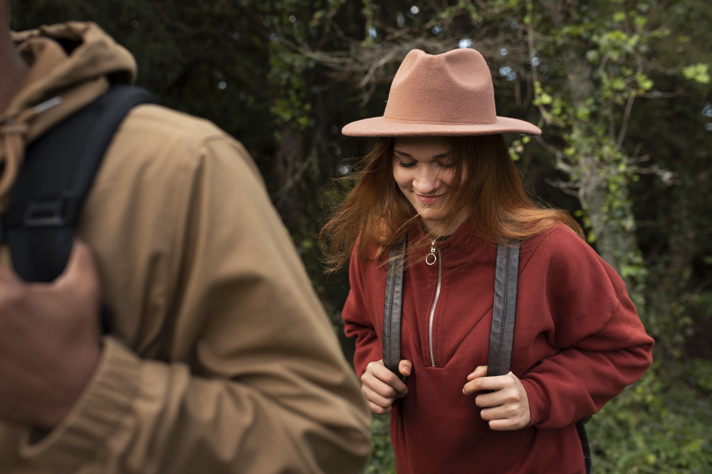
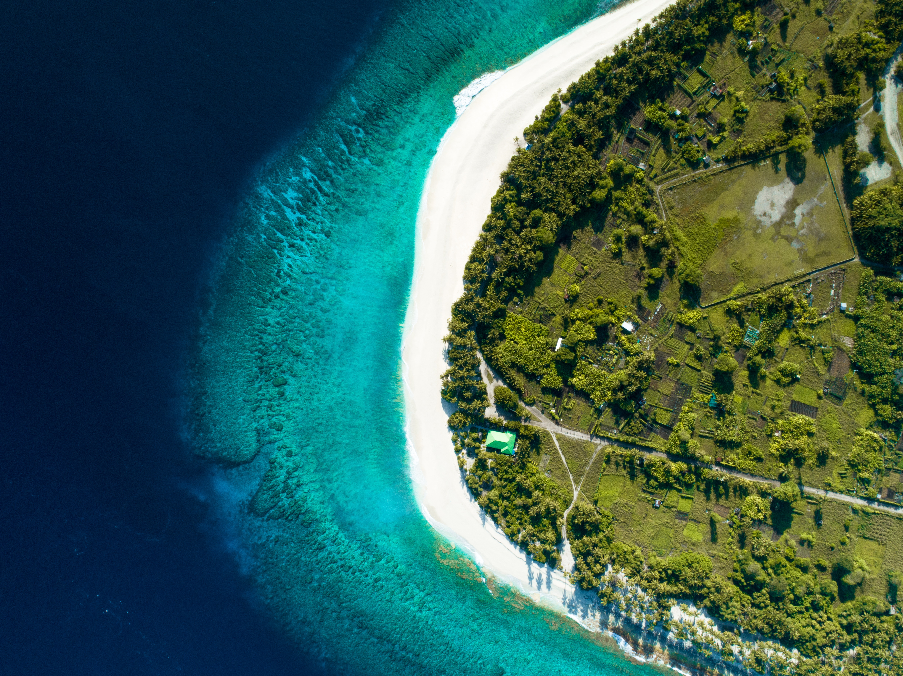

Anguilla is known for its pristine white-sand beaches, turquoise waters, and a laid-back island culture. It’s a favorite for travelers who want relaxation, luxury resorts, and excellent dining options. The island also has a reputation for being less crowded compared to other Caribbean destinations, making it perfect for peace-seekers.
Unlike Anguilla, “cc” is not clearly defined as a travel destination in this context. If by “cc” you mean the Cocos (Keeling) Islands, then you’re looking at an entirely different type of paradise — remote, adventurous, and nature-rich. These islands in the Indian Ocean offer snorkeling, diving, and raw natural beauty far from the bustle of mainstream tourism.

Choosing between Anguilla and Cc isn’t about which place is objectively better—it’s about what kind of trip you want to have. Both destinations offer beauty and charm, but they cater to very different types of travelers. Think about whether you’re looking for indulgence and comfort or adventure and seclusion, and let that guide your decision.

If your ideal vacation includes luxury resorts, fine dining, and a relaxed island culture, Anguilla is the better choice. It’s the kind of destination where you can spend your days lounging on quiet beaches and your evenings enjoying upscale Caribbean cuisine.

If you prefer eco-tourism, adventure, and off-the-grid exploration, Cc (such as the Cocos Islands) is more your style. With snorkeling, diving, and pristine natural landscapes, it’s perfect for travelers who want a raw, untouched paradise far from crowds.
Ultimately, the decision comes down to your personality and preferences. Do you want a polished vacation with modern comforts, or a rugged experience surrounded by nature? Once you know your travel style, the choice between Anguilla and Cc becomes much clearer.

There’s no single answer to which is “better.” Both Anguilla and Cc (assuming it refers to Cocos Islands) are beautiful in their own right. The best destination is the one that matches your travel personality: refined relaxation or remote exploration.